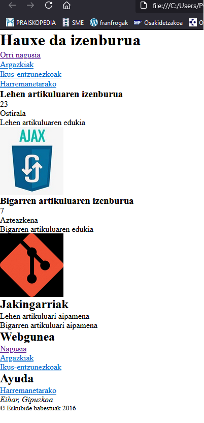
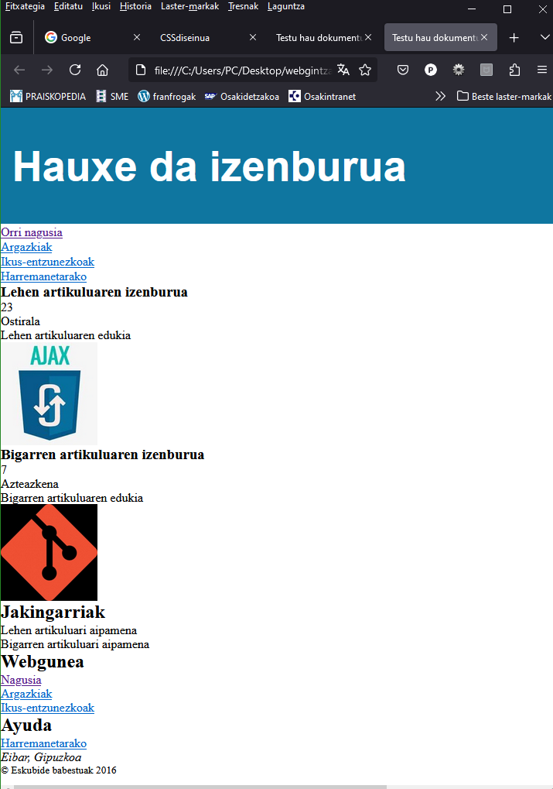
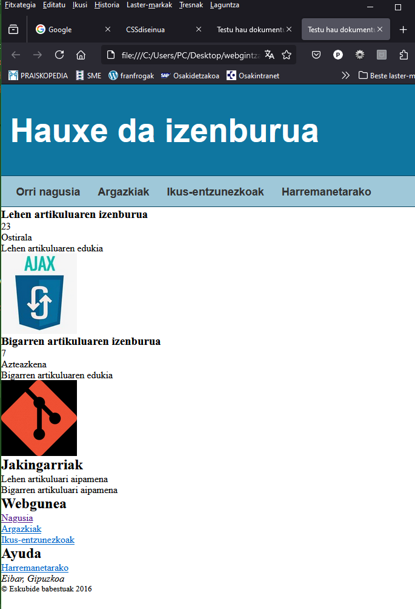
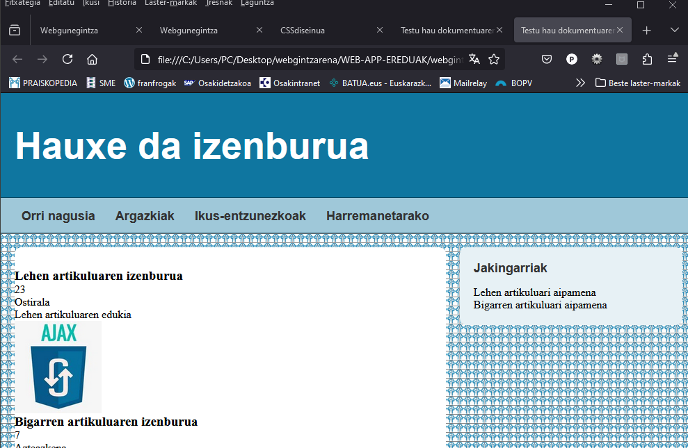
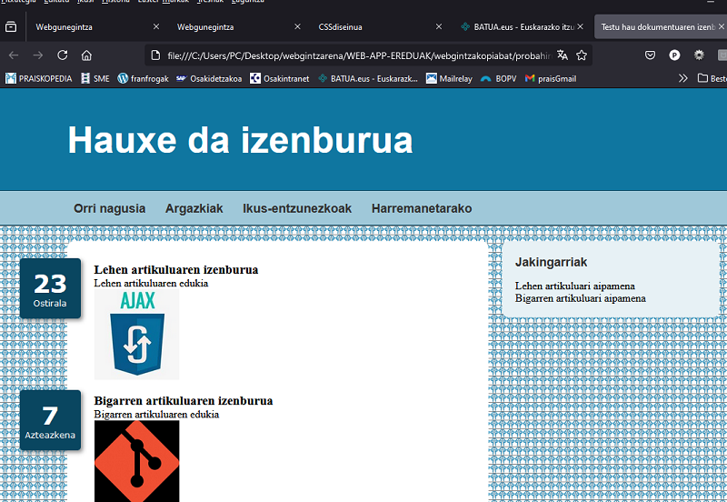
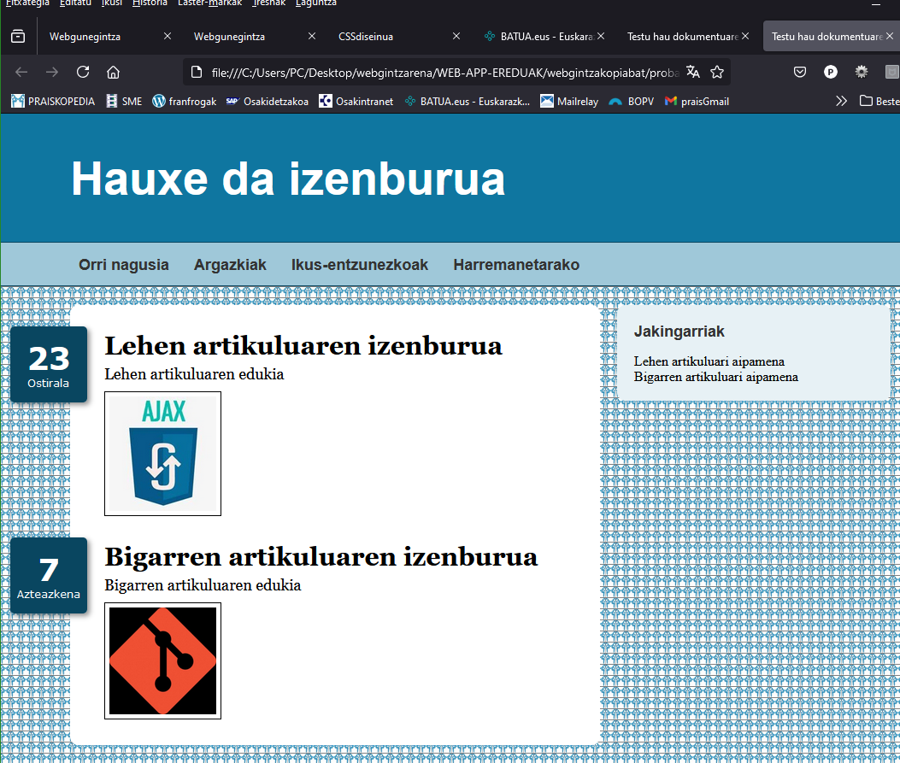
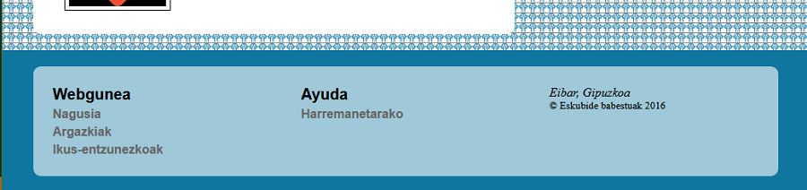
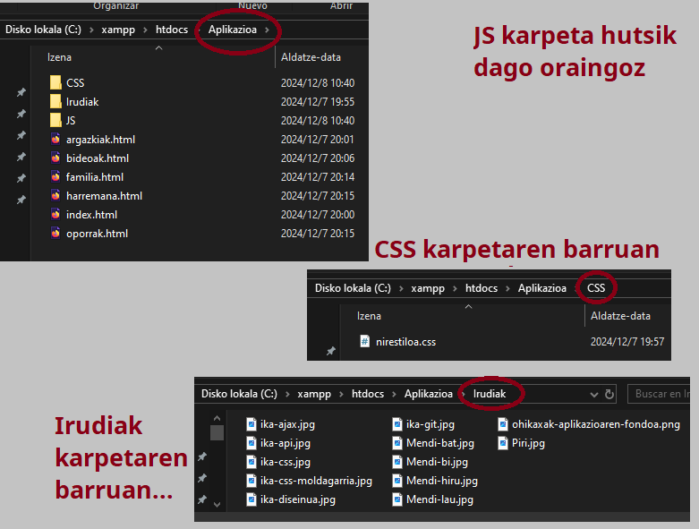
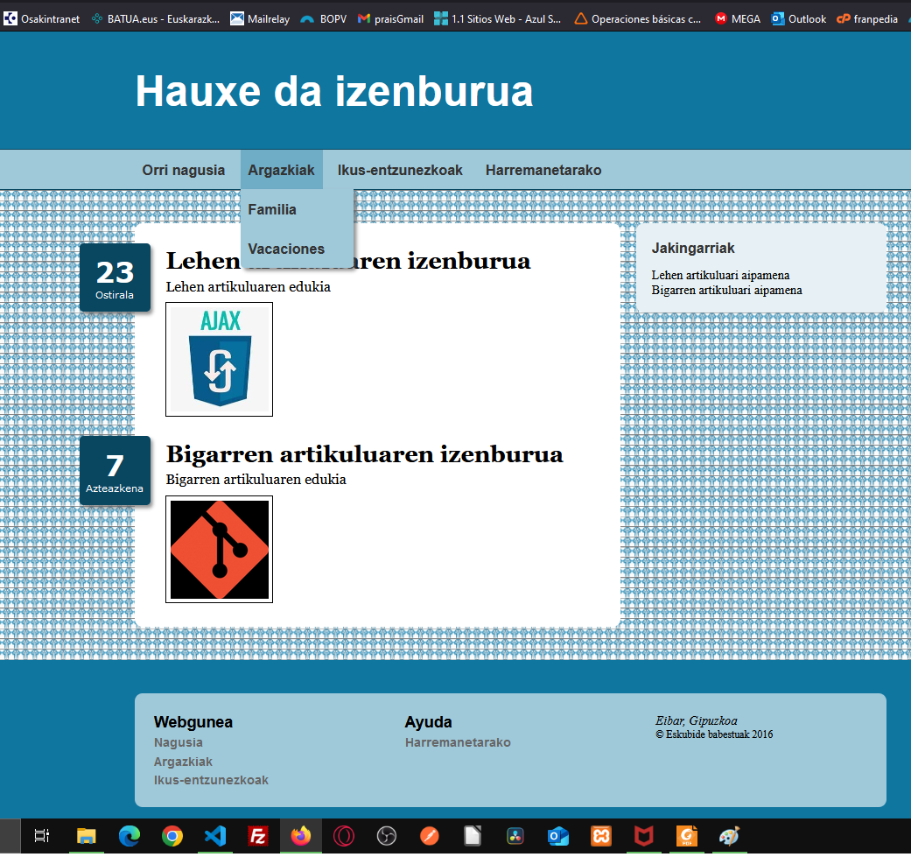

Benetako aplikazioa
Has gaitezen lanean serio
Kutxa-eredu tradizionalaren helburua web-orri baten ikusizko egitura antolatzea da, baina dituen ezaugarriak eta mugak direla eta, dokumentuak aldatu behar dira eredu horrekin lan egiteko.
2. kapituluan azaldu dugun bezala, webguneek eredu estandarra jarraitzen dute eta HTML elementuak diseinu hori sortzeko diseinatu dira, baina ezin dituzte agertoki posible guztiak aurreikusi.
Elementuek web-orri tradizional baten ikus-eremuak irudikatzeko, beste elementu batzuekin konbinatu behar ditugu. Oso ohikoa da elementuak edukiontzi batean biltzea, nahi ditugun posizioetara mugitu ahal izateko.
Adibidez, gure dokumentuaren goiburua nabigatzailearen leihoa bezain zabala izatea nahi badugu, baina edukia pantailan zentratuta badago, edukia <div> elementu batean bil dezakegu, eta, ondoren, elementu hori orrian zentratu.
Hemen daukazu diseinu mota hori erreproduzitu ahal izateko zure index.html fitxategian idatzi beharko zenuke kodea.
<!DOCTYPE html>
<html lang="es">
<head>
<title>Orriaren izena </title>
<meta charset="utf-8">
<meta name="description" content="Hau HTML5 dokumentu bat da">
<meta name="keywords" content="HTML, CSS, JavaScript">
<link rel="stylesheet" href="nirestiloa.css">
</head>
<body>
<header id="goiburuko-irudia">
<div>
<h1>Hauxe da izenburua</h1>
</div>
</header>
<nav id="menunagusia">
<div>
<ul>
<li><a href="index.html">Nagusia</a></li>
<li><a href="argazkiak.html">Argazkiak</a></li>
<li><a href="bideoak.html">Ikus-entzunezkoak</a></li>
<li><a href="harremana.html">Harremanetarako</a></li>
</ul>
</div>
</nav>
<main>
<div>
<section id="artikulu-nagusiak">
<article>
<h1>Lehen artikuluaren izenburua</h1>
<time datetime="2016-12-23" pubdate>
<div class="eguna-zenbakia">23</div>
<div class="eguna-izena">Ostirala</div>
</time>
<p>Lehen artikuluaren testua</p>
<figure>
<img src="nireirudia1.jpg">
</figure>
</article>
<article>
<h1>Bigarren artikuluaren izenburua</h1>
<time datetime="2016-12-7" pubdate>
<div class="eguna-zenbakia">7</div>
<div class="eguna-izena">Miércoles</div>
</time>
<p>Bigarren artikuluaren testua</p>
<figure>
<img src="nireirudia2.jpg">
</figure>
</article>
</section>
<aside id="info-erantsia">
<h1>Norberaren informazioa</h1>
<p>Lehen artikuluari aipamena</p>
<p>Bigarren artikuluari aipamena</p>
</aside>
<div class="berreskuratu"></div>
</div>
</main>
<footer id="oineko-irudia">
<div>
<section class="oineko-saila">
<h1>Webgunea</h1>
<p><a href="index.html">Nagusia</a></p>
<p><a href="argazkiak.html">Argazkiak</a></p>
<p><a href="bideoak.html">Ikus-entzunezkoak</a></p>
</section>
<section class="oineko-saila">
<h1>Ayuda</h1>
<p><a href="harremana.html">Harremanetarako</a></p>
</section>
<section class="oineko-saila">
<address>Eibar, Gipuzkoa</address>
<small>© Eskubide babestuak 2016</small>
</section>
<div class="berreskuratu"></div>
</div>
</footer>
</body>
</html>
Ohiko kaxen eredua adibide gisara emateko dokumentuaren oinarria
Adibide honetan, egiturazko elementu batzuen edukia <div> elementu gehigarri batekin bildu dugu. Orain, tamaina eta lerrokadura independenteak esleitu ditzakegu dokumentuaren atal bakoitzerako.
Egin ezazu zuk zeuk
Sortu proiektu berri bat (Karpeta bat) Aplikazioa izenarekin. Karpetaren baruan sortu HTML fitxategi bat eta idatzi bertan goiko HTML kodea. Beste alde batetik sortu css fitxategi bat nirestiloa.css izenarekin jarraian aurkeztuko dizkizudan CSS kode guztiak sartzeko. HTML dokumentuan jarri esteka CSS dokumentua eta HTML dokumentuak lotzeko. Ireki dokumentua zure nabigatzailean elementuak lehenetsita nola antolatzen diren ikusteko.
HTML dokumentua prest. CSS estilo-orria garatzeko garaia.
Hasteko, lehenik eta behin kontuan hartu behar dugu zer egingo dugun nabigatzaileak lehenetsitako estiloekin. Kasu gehienetan, estilo horiek ez dira behar ditugunak bezalakoak, eta, gainera, eragin negatiboa izan dezakete gure diseinuan.
Adibidez, nabigatzaileek marjinak esleitzen dizkiete gure dokumentuan maiz erabiltzen ditugun elementuei, hala nola <p> elementuari. <body> elementuak ere marjina bat sortzen du bere edukiaren inguruan, eta horrek ezinezko egiten du beste elementu batzuk nabigatzailearen leihoaren mugetaraino zabaltzea. Hori gutxi balitz bezala, elementuak konfiguratzeko modu lehenetsia ez da nabigatzaile batetik bestera aldatzen, batez ere oraindik erabiltzen diren nabigatzaile zaharren edizioak kontuan hartzen ditugunean.
Diseinu koherente bat sortu ahal izateko, edozein gailutan irekitzen dela ere, estilo lehenetsi batzuk edo guztiak birsortu behar ditugu. Hori egiteko modu praktiko bat CSS hautagailu unibertsal bat erabiltzea da. Hautagailu bat da,* hautatzailearekin irudikatzen dena eta dokumentuko elementu guztiei eragiten diena. Adibidez, hurrengo arauak 0 pixeleko marjinak eta betegarriak adierazten ditu gure dokumentuko elementu guztietarako.
* {
margin: 0px;
padding: 0px;
}
Nabigatzaileak lehenetsitako marginak eta betegarriak ezabatzeko erregela.
Gure CSS fitxategiaren lehen araua duzu hori. Horrela elementu guztiek 0 pixeleko tartea eta betegarria izatea ziurtatzen duzu. Hemendik aurrera, margina eta betegarrien tamaina nahieran moldatu ahal izango ditugu.
Egin ezazu zuk zeuk
nirestiloa.css estilo-orrian goiko css kodea jarriko dugu goi-goian. Handik behera idatziko ditugu aurrerantzean aurkeztuko ditugun erregela guztiak, bata bestearen azpian ur-jauzi eran.
Oinarrizkoa
Goiko arauarekin egin duguna da gure dokumentuaren estiloak berridatzi. Praktika arrunta da, eta, oro har, marjinak eta betegarriak aldatzea baino zerbait gehiago eskatzen du, adibide honetan egin dugun bezala. Aldatu behar ditugun estiloak, gehienetan, proiektu bakoitzerako berdinak direnez, garatzaileek arau horiek dituzten estilo-orriak sortu dituzte, gure dokumentuetan gure estiloekin batera ezar ditzakegunak. Estilo-orri horiei erreseteo-estiloko orriak (Reset Style Sheets) esaten zaie, eta hainbat orri daude eskuragarri. Adibide bat ikusteko, bisitatu meyerweb.com/eric/tools/css/reset /.
Erregela sinple horrekin elementu guztiak nabigatzailearen leihoaren ezkerraldean lerrokatuta geratzea lortzen dugu, inguruan marjinarik gabe eta haien arteko distantzia berak bereizita.

Oinarrizko estilodun dokumentua
Goiburua
Hurrengo urratsa goiburua diseinatzea da. Kasu honetan, <header> elementua nabigatzailearen leihoaren mugetaraino zabaltzea nahi dugu, edukia zentratuta egotea eta 960 pixeletik gorakoa ez den eremu batean kokatzea (tamaina estandarra da mahaigaineko ordenagailuek dituzten pantaila zabaletarako). Honako hauek dira helburu horretarako behar diren arauak.
#goiburuko-irudia {
width: 96%;
height: 150px;
padding: 0% 2%;
background-color: #0F76A0;
}
#goiburuko-irudia > div {
width: 960px;
margin: 0px auto;
padding-top: 45px;
}
#goiburuko-irudia h1 {
font: bold 54px Arial, sans-serif;
color: #FFFFFF;
}
Goiburuari estiloak eransteko
Goiburuak leihoaren zabalera izatea nahi dugunez, tamaina ehunekotan adierazi behar dugu. Elementu baten tamaina ehunekotan adierazten denean, nabigatzaileak pixeletan kalkulatzen du benetako tamaina, edukiontziaren egungo tamainatik abiatuta (kasu honetan, nabigatzailearen leihoa). Gure dokumenturako, goiburuak leihoaren zabalera bera izatea nahi dugu, baina alboetan betegarri bat izatea, edukia ertzetik bereizita egon dadin. Asmo horrekin, % 96ko balioa esleitzen diogu width jabetzari, eta % 2ko betegarria aitortzen dugu alboetan. Leihoak 1.000 pixeleko zabalera badu, adibidez, elementuak 960 pixeleko zabalera izango du eta 20 pixeleko betegarria alboetan.
Oinarrizkoa
marjina edo betegarri finko bat esleitu nahi badiozu elementu bati, baina, aldi berean, haren zabalera doitu nahi baduzu espazio erabilgarri guztia har dezan, autobalioa width jabetzari esleitu ahal diozu. Balio horrek elementuaren zabalera kalkulatzeko eskatzen dio nabigatzaileari, edukiontziaren zabaleratik abiatuta, baina marjinen balioak, betegarriak eta elementuaren ertzak kontuan hartuta. Adibidez, leihoak 1.000 pixeleko zabalera badu eta goiburuari 50 pixeleko betegarria esleitzen badiogu alde bakoitzean eta bere zabalerarako autobalioa, nabigatzaileak 900 pixeleko zabalera emango dio.
Adibide honetako bigarren arauak <div> elementuei eragiten die, <header> elementuaren ondorengo zuzenak baitira. Goiburuko edukia biltzeko elementu bakarra erabiltzen dugunez, elementu horrek aldatuko du erregela.
Propietateek 960 pixeleko zabalera eta 0 pixeleko balioa duten marjina esleitzen dituzte goiko eta beheko zatietarako, eta autobalioa ezkerreko eta eskuineko aldeetarako. Auto-balioak nabigatzaileari eskatzen dio marjina kalkulatzeko, elementuaren tamainaren eta edukiontzian dagoen espazioaren arabera. Horren ondorioz, nabigatzaileak elementua eta, beraz, edukia zentratzen ditu, edukiontziaren zabalera 960 pixeletik gorakoa denean.
Azkenik, #cabezeralogo h1 erregela adieraziko dugu, goiburuko elementuaren kolorea eta letra mota aldatzeko. Beheko irudian ageri da emaitza.

Horrela geratuko da goiburua estiloak erantsi ostean
Oinarrizkoa
960 pixeleko muga ordenagailu pertsonal eta eramangarrien pantaila zabaletarako web orrien tamaina adierazteko erabiltzen den balio estandarra da. Balioa ezartzeko, pertsonek testu luzeak irakurtzeko duten gaitasuna hartu zen kontuan. Testu bat irakurtzeko modukoa izan dadin, lerroko 50-75 karaktere izatea gomendatzen da. Eduki guztia nabigatzailearen leihoaren alboetaraino zabaltzen badugu, gure webgunea ezingo litzateke pantaila zabaletan irakurri. Gailu mugikorrak sartzearekin batera, mugak eta eskakizunak aldatu egin dira. Webguneak jada ez dira diseinu finkoekin garatzen.
Kapitulu honetako hurrengo atalean diseinu malguak nola sortu eta gure webguneak gailu mugikorretara nola egokitu aztertuko dugu, 5. kapituluan web-diseinu moldagarria erabiliz.
Nabigazio-menua (nav)
Goiburua bezala, gure diseinuaren menua leihoaren mugetaraino zabaltzen da, baina aukerak 960 pixeletik beherako espazioan zentratu behar dira.
#menunagusia {
width: 96%;
height: 50px;
padding: 0% 2%;
background-color: #9FC8D9;
border-top: 1px solid #094660;
border-bottom: 1px solid #094660;
}
#menunagusia > div {
width: 960px;
margin: 0px auto;
}
Nabigazio menuaren eremuari estiloak eransteko
Estilo horiek elementua eta haren edukia kokatzen dute, baina menua osatzen duten <ul> eta <li> elementuek oraindik esleituta dituzte itemen zerrenda bertikala sortzen duten estilo lehenetsiak, eta aukerak bata bestearen ondoan jarri behar ditugu. Elementua horizontalki antolatzeko hainbat modu daude, baina alternatibarik onena, kasu honetan, <li> elementuak elementu inline-block gisa deklaratzea da. Horrela, lerro berean koka ditzakegu eta tamaina pertsonalizatua eman diezaiekegu.
#menunagusia li {
display: inline-block;
height: 35px;
padding: 15px 10px 0px 10px;
margin-right: 5px;
}
#menunagusia li:hover {
background-color: #6FACC6;
}
#menunagusia a {
font: bold 18px Arial, sans-serif;
color: #333333;
text-decoration: none;
}
Nabigazio menuko elementuei estiloak eransteko
4-24 zerrendako lehen arauak <nav> elementuaren barruko <li> elementuak inline-block elementutzat jotzen ditu, eta 35 pixeleko altuera ematen die, 15 pixeletik gorako betegarria eta 10 pixelekoa alboetan. Adibide honetan, halaber, sasiklasea duen erregela bat dago: sagua aukera baten gainean dagoen bakoitzean 'li' elementuaren hondoko kolorea aldatzeko hover. Azken erregelan, elementuak beste kolore eta letra-mota batekin ere aldatzen dira. Beheko irudian ageri da emaitza.

Horrela geratuko da nabigazio-menua estiloak erantsi ostean.
Oinarrizkoa
<ul> eta <li> elementuekin sortutako item-zerrenda batek display propietatearentzat list-item balioa du lehenetsita. Modu horrek itemen zerrenda bertikal bat sortzen du, itemak identifikatzen dituen ezkerreko aldeko grafikoekin. Display propietaterako balio desberdina adierazten duenean, grafiko horiek ezabatu egiten dira. Modua list-item denean adierazleak aldatzeko edo ezabatzeko, CSSk list-item propietatea eskaintzen du (hau da, list-styleimage, list-style-position eta list-style-type propietateen balioak definitzen dituen propietate orokorra). CSSk hainbat balio ditu, eta ezaugarri horri esleitu ahal dizkiogu erakutsi beharreko grafiko mota zehazteko. Erabilienak none, square, circle eta decimal dira. Propietateak grafikoaren posizioa adierazteko aukera ere ematen digu (inside edo outside), baita irudi pertsonalizatua ere (adibidez, list-style: url ("niregrafikoa.jpg");).
Eduki nagusia (main)
Jarraian, gure webgunearen atal nagusia diseinatu behar dugu. Atal hau <main> elementuarekin identifikatu da eta zutabe bihurtu behar ditugun elementuak ditu. Goibururako eta menurako erabili dugun patroi berari jarraitzeko, elementua leihoaren alboetara zabaldu behar dugu, eta edukia zentratu.
Egin ezazu zuk zeuk
Aplikazioa izendatu dugun proiektuaren erroko karpetaren barruan, index.html, nirestiloa.css fitxategien ondoak karpeta beri bat sortu Irudiak izenarekin. Sartu bertan irudi txiki bat (10x10) pixelekoa hondoa.png izenarekin. Irudi txiki-txiki hori errepikatu egingo da ezker eskuin eta goitik behera <main> elementuaren eremu guztia bete arte.
main {
width: 96%;
padding: 2%;
background-image: url("hondoa.png");
}
main > div {
width: 960px;
margin: 0px auto;
}
Orriko eduki nagusiari estiloak eransteko.
Goiko erregelek atzealdea irudiz esaltzen dute, eremu nagusia eta orrialdearen gainerakoa bereizteko. Goiko eta beheko aldean ere %2ko betegarria erantsiko dugu, eremu nagusiko edukia nabigazio-menutik eta orri-oinetik bereizteko.
Oinarrizkoa
Hondoek elementuaren eta haren betelanaren eremua estaltzen dute. Besterik adierazi ezean marginak kanpoaldean daude eta, beraz, background propietateak ez die eragiten. Hondoa elementuak okupatutako eremu osoan erakustea nahi baduzu, saihestu egin behar duzu marjinak erabiltzea eta, horren ordez, betelanak esleitzea, goian egin dugun bezala.
Eremu nagusia definituta dagoela, gure webgunearen eduki nagusia aurkezten duten bi zutabeak sortzeko garaia da. (section) eta (aside).
#artikulu-nagusiak {
float: left;
width: 620px;
padding-top: 30px;
background-color: #FFFFFF;
border-radius: 10px;
}
#info-erantsia {
float: right;
width: 280px;
padding: 20px;
background-color: #E7F1F5;
border-radius: 10px;
}
#info-erantsia h1 {
font: bold 18px Arial, sans-serif;
color: #333333;
margin-bottom: 15px;
}
.berreskuratu {
clear: both;
}
Eduki nagusiarentzat zutabeak antolatzko.
Kasu honetan, float propietatea erabiliko dugu zutabe bakoitza irudikatzen duten elementuak alboetara mugitzeko. <section> elementua ezkerrerantz mugitu da, eta <aside> elementua eskuinerantz, batez beste 20 pixeleko tartea utziz.

Oinarrizkoa
Web-orriko elementuak float propietatearekin posizionatzen diren bakoitzean, dokumentuaren fluxu normala hurrengo elementuarekin berreskuratzea gogoratu behar dugu. Helburu horrekin, gure adibidean <aside> elementuaren azpian edukirik ez duen <div> elementu bat gehitu dugu.
Zutabeak prest daudenez, edukiak diseinatu behar ditugu. (article)
Goiko kodeak badu <aside> elementuaren edukia konfiguratzen duen erregela bat, baina oraindik <article> elementuak lehen zutabean konfiguratu behar ditugu.
<article> elementu bakoitzak <time> elementu bat du, artikulua argitaratu den data adierazten duena. Gure diseinurako, data hori artikuluaren ezkerraldeko kutxa batean erakustea erabaki genuen, eta, beraz, elementu horrek posizio absolutua izan behar du.article { position: relative; padding: 0px 40px 20px 40px; } article time { display: block; position: absolute; top: -5px; left: -70px; width: 80px; padding: 15px 5px; background-color: #094660; box-shadow: 3px 3px 5px rgba(100, 100, 100, 0.7); border-radius: 5px; } .eguna-zenbakia { font: bold 36px Verdana, sans-serif; color: #FFFFFF; text-align: center; } .eguna-izena { font: 12px Verdana, sans-serif; color: #FFFFFF; text-align: center; }<time> elementuari posizio absolutua eta estiloak esleitu dizkiogu.
<time> elementuari posizio absolutua esleitzeko, aitaren posizioa erlatiboa dela adierazi behar dugu. Hori lortzeko, erlatibe balioa esleitzen diogu jabetza positiboari goiko kodeko lehen erregelan.
Bigarren erregelak <time> elementuaren posizioa eta tamaina definitzen ditu. <time> elementua <article> elementuaren gainean 5 pixeletara eta haren ezkerraldera 110 pixeletara kokatuko da.

Posizio absolutua <time> elementuarentzat
Gainerako erregelek <article> elementu bakoitzaren barruan eskatzen diren estiloak esleitu behar dituzte.
article h1 { margin-bottom: 5px; font: bold 30px Georgia, sans-serif; } article p { font: 18px Georgia, sans-serif; } figure { margin: 10px 0px; } figure img { padding: 5px; border: 1px solid; }Artikuluei hainbat estilo esleitu diogu.

Artikuluak
Orriaren oina
Azkenik, arau gutxi batzuk gehitu behar dizkiogu gure estilo-orriari, orri-oina konfiguratzeko. (footer).
<footer> elementua, gainerako egitura-elementuekin egin dugun bezala, leihoaren alboetaraino zabaldu behar da, baina kasu honetan edukia hiru <section> elementurekin banatzen da informazioa zutabeetan aurkezteko. Ikus dezagun.
Zutabe horiek columns propietatearekin sor ditzakegun arren, elementuek gure dokumentuaren sekzioak irudikatzen dituztelako, float propietatea egokiagoa da.
#oineko-irudia {
width: 96%;
padding: 2%;
background-color: #0F76A0;
}
#oineko-irudia > div {
width: 960px;
margin: 0px auto;
background-color: #9FC8D9;
border-radius: 10px;
}
.oineko-saila {
float: left;
width: 270px;
padding: 25px;
}
.oineko-saila h1 {
font: bold 20px Arial, sans-serif;
}
.oineko-saila p {
margin-top: 5px;
}
.oineko-saila a {
font: bold 16px Arial, sans-serif;
color: #666666;
text-decoration: none;
}
Orri-oinari estiloak esleitzen
Goiko arauek 276 pixeleko hiru sail zehazten dituzte, denak ezkerrerantz flotatzen, gure diseinurako beharrezkoak diren hiru zutabeak osatzeko.

Orri-oineko edukia hiru zutabetan
Kasu horietan, atal guztiak berdinak direnean, tamainak pixeletan adierazi beharrean, hobe da ehunekoetan egitea. Ehunekoaren balioak adierazten du elementuak zenbat espazio hartuko duen edukiontziaren barruan. Adibidez, atalen zabalera orri-oinean adieraz dezakegu, bakoitza % 27.33ko balioarekin, eta betelanarekin % 100 osatu.
.oineko-saila {
float: left;
width: 27.33%;
padding: 3%;
}
Balioak ehunekoetan dituzten atalen tamaina kalkulatzeko
Balioak ehunekotan adierazten direnean, nabigatzaileak kalkulatzen du zenbat pixel esleitu behar zaizkion elementu bakoitzari edukiontzian dagoen espazioaren arabera. Gure dokumentuari goian ikusitako araua aplikatzen badiogu, orri-oina irudikoaren antzekoa izango da, baina atalen tamainak nabigatzaileak kalkulatuko ditu orria aurkeztu aurretik (960 x 27.33/100 = 262).
GARRANTZITSUA
Portzentajezko balioak diseinu malguak sortzeko ere erabil daitezke, 5. kapituluan ikusiko dugun bezala, baina badago eredu hobe bat helburu horretarako, kutxa malguaren eredua izenekoa. Kutxa malguaren eredua kapitulu honetako hurrengo atalean aztertuko dugu.
Webgunea garatzen (orri berriak)
Arau horiekin amaitu dugu dokumentuaren diseinua, baina hau gure webguneko orrietako bat baino ez da. Dokumentu honek hasierako orria irudikatzen du, normalean lehenetsitako fitxategian gordetzen dena, index.html bezala, baina oraindik gainerako dokumentuak sortu behar ditugu eskuragarri dagoen orrialde bakoitza irudikatzeko. Zorionez, hau ez da lan zaila. Hasierako orrialderako garatu dugun diseinu bera, oro har, webgune osoan partekatzen da, eduki nagusiaren eremua aldatu besterik ez dugu egin behar, baina gainerakoak, hala nola goiburua, orri-oina eta dokumentuaren egitura, oro har, berdinak dira, estilo-orria barne, normalean dokumentu gehienek partekatzen dutena.
Egin ezazu zuk zeuk
Jakina, webguneak web-orri bat baino gehiago izan ohi dute. Zure proiektuan gutxienez argazkiak.html, bideoak.html eta harremana.html index.html fitxategiaren ondoan izan beharko zenituzte. Oraindik egin ez badituzu, sortu oraintxe bertan.
Egin index.html fitxategiaren hiru kopia eta jarri bakoitzari goian aipatutako izen bat.
Ordeztu bakoitzaren eremu nagusiko <section> eta <aside> elementuen edukia orri bakoitzari dagokion edukiarekin.
Nahi izanez gero, gehitu arau berriak fitxategi bakoitzeko .css fitxategi berriak sortuz. Estilo guztiak artxibo bakar batean kontzentratzea gomendatzen bada ere, dokumentu bakoitzari bere estilo-orria esleitzea ere egokia da. Ireki index.html fitxategia zure nabigatzailean eta egin klik esteketan orrialdeetan zehar nabigatzeko.

Fitxategi eredua
Beste eremu batzuk orrialde batean zehaztu behar baditugu edo eremu nagusia atal txikiagoetan banatu behar badugu, kaxak float propietatearekin antola ditzakegu, orri-oinaren barruko atalekin egin dugun bezala. Posizionamendu absolutua edo erlatiboa duten arlo batzuk ere diseina ditzakegun arren, modu horiek garrantzirik gabeko edukia kokatzeko gordetzen dira, gure adibideko artikuluen datekin edo ezkutuko edukia erakustea, erabiltzaileak eskaera bat egin ondoren.
Azpimenuak
Adibidez, aukera bakoitzerako azpimenu bat erakusten duen goitibeherako menu bat sor dezakegu. Hurrengo adibideak erakusten du nola erantsi azpimenu bat gure dokumentuko Argazkiak aukeran.
<ul id="menuzerrenda">
<li><a href="index.html">Nagusia</a></li>
<li><a href="argazkiak.html">Argazkiak</a>
<ul>
<li><a href="familia.html">Familia</a></li>
<li><a href="oporrak.html">Oporrak</a></li>
</ul>
</li>
<li><a href="bideoak.html">Ikus-entzunezkoak</a></li>
<li><a href="harremana.html">Harremanetarako</a></li>
</ul>
Azpimenuak esleitzeko
Azpimenuak dituen menu baterako estiloak ez datoz bat aurreko adibidearekin. Azpimenuko aukerak bertikalki zerrendatu behar ditugu horizontalaren ordez, zerrenda menuko barraren azpian jarri behar dugu balio absolutuekin, eta erabiltzaileak sagua aukera nagusiaren gainean mugitzen duenean bakarrik erakutsi behar dugu. Horretarako, goiko kodean menuzerrenda identifikatzailea gehitu diogu menu nagusia irudikatzen duen </ul> elementuari. Orain, elementu hori azpimenuak irudikatzeaz arduratzen diren </ul> elementuetatik bereiz dezakegu (bakarra gure adibidean). Arau hauek erabiltzen dute identifikatzaile hau menu guztiei eta haien aukerei estiloak esleitzeko.
#menuzerrenda > li {
position: relative;
display: inline-block;
height: 35px;
padding: 15px 10px 0px 10px;
margin-right: 5px;
}
#menuzerrenda li > ul {
display: none;
position: absolute;
top: 50px;
left: 0px;
background-color: #9FC8D9;
box-shadow: 3px 3px 5px rgba(100, 100, 100, 0.7);
border-radius: 0px 0px 5px 5px;
list-style: none;
z-index: 1000;
}
#menuzerrenda li > ul > li {
width: 120px;
height: 35px;
padding-top: 15px;
padding-left: 10px;
}
#menuzerrenda li:hover ul {
display: block;
}
#menuzerrenda a {
font: bold 18px Arial, sans-serif;
color: #333333;
text-decoration: none;
}
#menunagusia li:hover {
background-color: #6FACC6;
}
Azpimenuei estiloak esleitzeko kodea
Lehenengo bi arauek aukera nagusiak eta azpimenuak konfiguratzen dituzte. Arau horietan, posizio erlatibo bat esleitzen diegu aukera nagusiak adierazten dituzten <li> elementuei, eta, ondoren, posizio absolutu bat zehazten dugu menuaren goiko aldean dauden 50 pixeleko azpimenuetarako. Horrek azpimenuak menuko barraren azpian kokatzen ditu.
Azpimenu ikusezinak itzultzeko, display propietatea none balioarekin deklaratzen dugu. Erregela honetan beste propietate batzuk ere sartu behar izan ditugu, list-style, aukeren ezkerraldean lehenetsitako grafikoak ezabatzeko, eta z-index propietatea, azpimenua beti eremuko gainerako elementuen gainean agertzen dela ziurtatzeko.
Lehen egin dugun bezala, saguari erantzuteko, :hover seudoklasea ezarri behar dugu, baina kasu hau desberdina da. Erabiltzaileak sagua edozein aukera nagusiren gainean mugitzen duen bakoitzean azpimenua irudikatzen duen <ul> elementua erakutsi behar dugu, baina aukera nagusiak elementuekin adierazten dira <li>. Irtenbidea seudoklasea izendatzea da: hover elementuentzat <li>, baina ul izena gehitzea hautagailuaren amaieran, <ul> elementuaren barruan dauden <li> elementuei estiloak esleitzeko (<li>, seudoklaseak erasanda (#listamenu li: hover ul). Erabiltzaileak menu nagusiko aukera bat adierazten duen <li> elementuaren gainean mugitzen duenean sagua, block balioa <ul> elementuaren display propietateari esleitzen zaio, eta azpimenua pantailan agertzen da.

Azpimenuak agerian estekaren gainean sagua jartzean
Egin ezazu zuk zeuk
Eguneratu zure dokumentua azken koadroko kodearekin eta zure estilo-orriaren erregelak, azpimenuei estiloa esleitzeko ikusi dugun koadroko kodearekin. Ireki index.html fitxategia zure nabigatzailean eta mugitu sagua Argazkiak aukeraren gainean. Beharko luke, azpimenua agertu beharko litzaizuke irudian bezala.